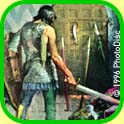

12 March 1997
MUDs1 are what led me into computer science, thereby radically altering the course of my life. I learned the principles of effective programming while building the world of my nightmares. Who could ask for more?
The virtual text-based world still seems magical to me, in concept and in practice. It is a medium wherein our persons are distilled to their essence, a world where the laws of the universe are created by people, and a living storyboard where imaginations run amok. You need look no further than the mudder who has been at his terminal for 36 hours straight2 to conclude that something terribly powerful lies behind that screen.
But this is a technical column, so forget all that. I'm going to assume a basic familiarity with what a MUD is and how it works, else I'd waste the whole column on background. I suggest reading the LPMud FAQ before continuing. It's also worth your while to read a little bit about the LPC programming language.
A MUD server, usually called a driver, is in some ways no different from other servers. It must manage connections from a number of clients and pass data around between them, perform all the usual resource management, and interact with the underlying operating system. In theory, it could be written in any language that had minimal networking support. Yet, an interesting MUD is constantly evolving. If the entire world were compiled into one huge binary, performance would be keen, but you'd have to restart the MUD to make any changes. Players might3 get a little annoyed. So the server must have some mechanism for extending its function on the fly.
A comparable example of flexible server extension from the Web world is CGI programs. In theory, you could use a WWW server and a collection of CGIs to implement a complete MUD. If you had an ounce of sense in your head, you wouldn't, but you could. The moral is that CGIs do provide an easy way to extend a WWW server's functionality without mucking with the server itself.
Mud server extension has to offer a bit better performance, and also has to be tightly integrated with the server and the rest of its objects. Therefore, most of what goes into building a MUD driver is providing the infrastructure for object interaction and world extension. Now let's delve into a specific MUD driver for insight into how this might work.
MudOS is the most popular of a class called "LPMuds", so named because they are all4 based on the original LPMud by Lars Pensji. The driver itself is written in C, but most of the mud specific code5 is written in a language called LPC. If you don't have a MUD background, you may never have heard of LPC, as it hasn't made it too far outside the mud scene, but it's a little like C, a little like C++, and a little like Java (before there was a Java.)
The driver offers a core set of functions called "efuns" (for external functions) that are written in C and are available to all objects within the MUD. These functions are to MUD objects as system calls are to a typical application. There are also "simul_efuns", which are in all respects like efuns, but they are written in LPC. They are slower than efuns, but typically easier to write, and code changes do not require recompiling the driver. Simulated efuns can also be used to change or modify the behavior of an underlying efun; for example, to add security checks. Finally, there are "applies", functions that are called in an object by the driver when certain events take place, e.g. "create" is called when an object is created. In Java terms, the set of applies are somewhat like an interface that all objects implement.
If efuns are the "system calls" for the MUD objects, they'll have to provide a complete set of building blocks, and indeed they do. To get an idea of some of the nifty things you can do with MudOS, here's a random smattering of efuns:
this_player();
This extremely commonly used function returns
the player object that caused execution to reach this point.
all_previous_objects();
Returns an array representing the objects in
the calling chain. This means that at any time, you can obtain a pointer
to the object that called this function in you, and the objects before
that, all the way up the calling chain. Many possible uses, including
security checks and callbacks.
function_exists(string str, object o);
Checks whether the object "o" has defined a function called "str",
and if so, returns the filename where that was defined. This provides
maximum flexibility to the programmers; instead of rigid interface
specifications, you can code around what exists and what doesn't.
call_out(function f, int delay, ...);
Specifies that a function "f" should be called after "delay" seconds
go by. If ten seconds after you knock on the door, an ogre should arrive,
you might use call_out to set it up.
shadow(object o, int flag);
Shadows are extremely cool. This allows you to attach functions to
another object that override its current behavior, changing the behavior
at runtime. For example, you wish to place a curse on a player
so that he cannot pick up any objects. Without shadows, this would
require modification of some core mudlib code, either the player object
or commands such as "get". Using shadows, you can attach an object
to the player that overrides (for example) a "can_get()" test function
in the player object, and always return false.
This is a very small sampling. For the full treatment, visit the MudOS WWW page. So clearly we have in MudOS a fairly mature, extensible environment with great possibilities. Even socket efuns have been contributed to the driver, which made possible such advances as inter-MUD chat systems, muds that can be fingered via the Internet, and WWW servers written in LPC and running within the MUD.
A while ago, a huge thread broke out on rec.games.mud.admin, spawned by an innocent question: "Is anyone working on a MUD driver in Java?" Everyone and his brother6 had an opinion on why Perl, Java, LISP, Prolog, Simula, or C/C++ was an ideal/so-so/deranged choice for implementing a MUD. It turned ugly quickly; one of those threads that has good potential for comparison but instead devolves into a language war.
I have an opinion too7. I propose that, from almost any perspective, Java is the right choice for implementing a MUD today.
 MUDs, like most I/O intensive programs, fall extremely naturally into
the threaded paradigm. Java has multithreading built in.
MUDs, like most I/O intensive programs, fall extremely naturally into
the threaded paradigm. Java has multithreading built in.
 There are many advantages to using the same language for the MUD
driver, the mudlib, and the MUD client. This opens up a wealth of
possibilities for passing data and code between client and server,
and for easy extension of core driver functions.
There are many advantages to using the same language for the MUD
driver, the mudlib, and the MUD client. This opens up a wealth of
possibilities for passing data and code between client and server,
and for easy extension of core driver functions.
 A tremendous amount of industry effort in being put into Java,
guaranteeing a large code base for interesting extensions, and a
steady supply of Java programmers.
A tremendous amount of industry effort in being put into Java,
guaranteeing a large code base for interesting extensions, and a
steady supply of Java programmers.
 The difficulty of client deployment, a major reason why most MUDs
still use nothing more advanced than telnet, is completely avoided
through the Java applet model. Once a client can be assumed, much
more advanced features become possible (and portable!)
The difficulty of client deployment, a major reason why most MUDs
still use nothing more advanced than telnet, is completely avoided
through the Java applet model. Once a client can be assumed, much
more advanced features become possible (and portable!)
The problem most often cited with Java today is speed. Yes, this is an issue for today, but if you don't believe Java is going to get fast, you probably also think InterCAL is the wave of the future.
About a year ago, some friends and I implemented a simple MUD driver and client in java for a class project. With relatively small amounts of time, effort, and code expended, we had a working server and dedicated client, as well as some features that would have been quite a lot of work to implement in other muds.
You can associated a graphic URL with a mud object, so that if a player looks at it, the picture is displayed on the client. Because of Java's built-in URL and image handling routines, this required only a few lines of code. Audio capabilities are just as trivial.
Dynamic loading of new code on the server side was also easy, thanks to Java's ability to instantiate an object by name. Once an object is instantiated, it is retained in a hash table so it will not be garbage collected, and these could be released for GC periodically if memory utilization exceeded a certain limit.
I'm running the Java driver on port 2015 of www2.go2net.com for this week. If you download the code (as a gzipped tar file or zip file) and run
java Client www2.go2net.com 2015you will see the state of our world just as we turned it in. Maybe it would be better if you didn't.
-- Paul <paulp@go2net.com> is thankful he is no longer addicted to MUDs. Usually.